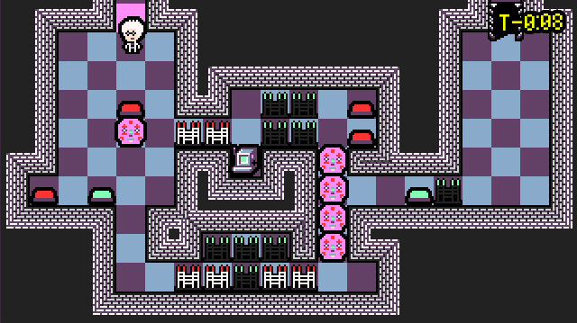

Paradox - Minijam 113 Entry
There’s a new sneaki boi in the bushes and its name is Charnel Fontaine
It likes typing on terminals, inventing evil super intelligences, and pushing big pink heads around on the floor to solve puzzles.
or more like it’s the story of me
It’s been 6 days since day one of Minijam 113, and after all six of those days, I am now able to announce:
So what was that like?
I mean it’s my 3rd published game now.
So it was pretty rad!
The biggest difference between getting through this game jam, and getting through my first Ludum Dare, was that I moved much, much faster. There were a few reasons. To a degree, there were assets from past projects that I could re-use, like the dialogue system. At this point, I’ve re-used the same dialogue system for my last three games, though it’s changed wildly between Picowars and Overworld because it was a change from Lua -> GDscript, but still.. it’s the same code, just translated.
But more importantly than the reusable assets, was the fact that I just knew what I was doing. That big bad Godot interface just isn’t as spooky as it once was, and to be fair it was never as spooky as Unity’s interface once was 🤮
Godot feels like home now. And I feel productive in it.
But this jam must have presented some challenges rite
ye thts rite.
Half the time I was staring at my screen hating everything I saw, and the other half of the time I was really excited and thinking “oh wow.. maybe this has some kind of potential!”
Granted every time I thought that, I’d shortly after rescind the statement.
Puzzle design is tough, and every time I’d think I had a puzzle that was somewhat cool, I would realize that it’s actually pretty:
- Linear
- Unintuitive
- and Mechanical
The first few puzzles I made have been entirely thrown out, and I actually REALLY LIKED them at some point too!
Like, I shared one of them on social media.
When I finished that level, I thought it was so sly and that I was going to save it for the final level, but…
After making a few other levels, I started to learn my own game better, and learn what made fun puzzles, and what made shitty ones.
Here’s what’s wrong with each room of that level above that makes it a bad level:
- From the very beginning, it relied on pressing the red and green buttons a seemingly random number of times to get them just right so that you’d be able to progress to the next room. I thought this was good level design because it was hard. In reality it was bad because of why it was hard.
- The second room that you progress to has 6 buttons, and it’s a little better than the first room, but it’s still bad. The idea of this room is to press the buttons in the right combination to let you safely walk through the gates of the next hallway when your dolleganger comes to copy your button-presses. It’s bad because once again you’re relying too much on timing, and measuring where your doppleganger will be at any point in time is hard, and not in a fun way. It’s hard to know exactly when you start pressing the buttons to open up the hallway.
- The final hallway is a repeat of the second.
Beyond the design of each individual room, the level as an integrated whole is just boring.
I made this level right before I realized the intrigue of backtracking.
Backtracking
As an example of a level that heavily utilizes backtracking:

Every room in this level(other than the final room) is interacted with more than once. Heads are shuffled between rooms, and backtracking is needed to accomplish things in other rooms that you previously couldn’t.
It’s weird to implement backtracking as a mechanic in a game in which nothing but the last 8 moves are significant, but it works surprisingly well, even though the implementation can be very tedious.
What’s Next?
I’m going to finish this fucking game
It’s probably another week of dev out from a version 1.0.0, but we’ll get there! I’ve had Overworld on hiatus for this project, and honestly I’m itching to get back to it. I’ve put so much work into Overworld.. and there’s a lot more work left.. but I like where it’s headed.
I’ll post here the results from the minijam ratings. I think there’s a good chance of taking a second or third place!
Paradox Version 0.2.6 - Demo for Minijam 113
This is the original build for Minijam 113.
(pst.. for a more not old-as-fuck build, play the game on ITCH.IO 🛹 )